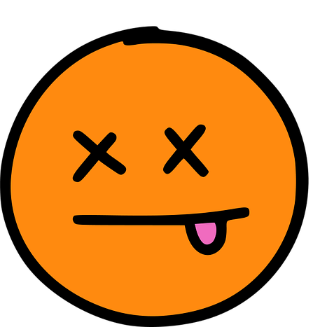

Hola..!
Esto está en construcción.
Y nunca dejará de estarlo.
11/07/2023 | Madrugrada
No sé por dónde empezar. Desde la última vez que te escribí me he estado arrepintiendo...de lo que escribí.
Cuando decidí leer los mensajes no estaba alterado y tenía buena disposición para responderte con la ternura que quería transmitir.
Quizá tras leer los mensajes no tomé el tiempo suficiente para procesar el impacto emocional que me generó.
Pienso que la mayor parte de mis mensajes fueron basura...creo que dije que ni yo sabía qué estaba expresando o que me parecían rarísimos.
Mi intención con todo esto es abrirme de la mejor manera que se me ha ocurrido en este momento. Supongo que lo hago por mí, para demostrarme que sigo vivo y aquí; todavía estoy aquí.
Tengo tantas cosas que me gustaría decirte, por lo que iré redactando poco a poco (o no). Porque yo nunca me cansaré de hablar contigo y buscarte...
I'll find my soul as I go home
11/07/2023 | Tarde
No te lo pregunté porque me dio un brote y quise reventarlo todo...porque sentí que quizá me sentiría mejor rompiendo la relación, fuera la que fuera.
Pero me quedé con ganas de saber cómo te encuentras, qué es aquéllo de lo que te has dado cuenta en estos meses.
Me refiero a eso de que "no te reconocías". Obviamente no sé a qué te referías exactamente o si era algo en general...
Es algo que me gustaría escuchar atentamenente. Recuerdo, y digo recuerdo porque me da angustia releer mis mensajes, que mencioné el MAL que suponen los programas que fomentan comportamientos dañinos para la salud mental.
Supongo que es no es algo tan descabellado de decir, pero también puede que fuera exagerado...dramático, muy mío.
Sea como fuere, si te sirvió para ver la televisión como un espejo durante un momento; es bueno 👻
pero la máquina de pensar funciona mal
11/07/2023 | Más Tarde
No creo que mi postura de dar la chapa sea buena. Me doy cuenta de que en cierto aspecto soy un fraude, pues soy la viva imagen de la contumacia.
Tenacidad y dureza en
Esto ha hecho que durante mucho tiempo, más allá de todo lo ocurrido, me hiciera sentir esa culpabilidad como si hubiese cometido un crimen o un pecado...
mantener un error.
Pensándolo sobre la marcha, creo que compartir -aquí y en otros espacios- lo que me sucede y conocer...no, entender que mucha gente se puede sentir así; tenga (((problemas))) o esté más equilibrada.
Porque sí, soy un paranoico y me altero cuando hablo o me hablan de aquello que no expreso o hago con poquísima frecuencia.
No sé cuánto tiene que ver con esto o que soy, por decirlo de alguna manera, nuclear.
Y sí, intento pensar que no soy el único paranoico e intento no acapararlo todo 💀
Otra representación visual.
De cómo mi cabeza salta de una cosa a otra.
Cuando toco fondo.
Se mezclan las sensaciones.
Y se intensifica una...
...mientras otra aún sigue presente.
Diluyéndose...diluyéndome.
11/07/2023 | Aún Más Tarde
Estos párrafos son independientes. No sé si lograré darle cohesión. Perdón.
Pienso que, aunque no me he dado cuenta, ya no pienso en el pasado y lo que pudo ser.
Pero sí puedo pensar en lo que podría ser. Claro que soy un Jekyll & Hyde en toda regla...pero la tendencia es esa.
Con esto quiero decir que cada vez soy más positivo respecto al futuro. Quizá porque haya encontrado cierta paz en mí mismo...
Por otro lado, le doy vueltas a nuestra relación. A las tres partes: tú, yo y nosotros.
Y el lenguaje del amor, que le llamo así porque es un TEST que hice y me hizo pensar en lo evidente: no entendemos los actos de amor de la misma manera.
No es algo que arroje tanta luz...pero mi cabeza es incapaz de caer en esas cuestiones sin un empujoncito.
Números, gráficas y estadísticas. Eso es posible que no llegue a cambiar...
Sé que no somos tan distintos. Tenemos esa inclinación a la frustración, al borde-rismo (acabo de inventármelo) y la inflexibilidad.
Así como esa dificultad para sentirnos satisfechos con la vida y el paso del tiempo. Lo-Cual-Es-Una-Pesadilla.
18/07/2023 | Amanecer
Me ha tomado tiempo poder retomar la construcción. Hoy he vuelto a soñar contigo, pero no he esperado a olvidarlo todo.
En la historia se mezclaban tres historias independientes. Empezando por aquéllas cuyo significado no entiendo
La primera historia empieza conmigo de protagonista, pero tras algunas acciones que no recuerdo, volvía a ver al protagonista en tercera persona; que ya no era yo.
Parecía ser un tipo pringrado a quien le habían preparado una (((cita))) con una prostituta pasada de rosca. Una mujer de entre 50 y 60 años.
La historia tenía esa connotación de película americana doblada al español en la década de los 70. Tenía ese sonido relativamente falso.
El plan consistía en que el chico tuviera sexo con la prostituta, pero como parte de un esquema más complejo. Por algún motivo necesitaban quitárselo de encima durante unas horas.
Tras una experiencia nefasta (para ella), lo aterrizan en el puerto; ya que estaban en un barco -al parecer-. Ahora, acompañada por dos guardaespaldas, pone rumbo a mar abierto.
El chico, en un momento de supuesta lucidez, piensa que ella se habrá enamorado de él y querrá tenerlo cerca, por lo que salta al barco cual polizón.
Tras una omisión narrativa, lo siguiente que sucede es que el chico es descubierto y lanzado a mar abierto. Como si fuera una maldición andante, la hélice del barco lo atrae, atrapa y descuartiza; rompiéndose en el proceso.
El barco pierde rumbo en dirección a la playa. Al llegar, los guardaespaldas son inmediatamente detenidos por la policía, que esperaban su llegada.
Mientras que la prostituta se convierte en actriz y llora por el mal trago que le han hecho pasar esos salvajes de negro. La policía da con ella e intenta consolarla, hasta que reciben una llamada por radio describiendo dos tatuajes de la prostituta mafiosa, quien vestía un bañador.
La segunda historia también empieza conmigo de protagonista. Por algún motivo estoy colgando una planta entre el "techo" del balcón y un árbol cuya altura supera la de mi posición.
Durante un breve instante siento pánico...tengo acrofobia. Me alejo de la barandilla del balcón con ese miedo irracional, recién plantado en mi cabeza.
A pesar de ello, repito la acción para ver si puedo forzar mi regreso a la tranquilidad. Siendo incapaz de lograrlo. En el que supuso el último intento, visualizo a alguien en el suelo; fuera del edificio.
Y sangre a su alrededor. Alguien había saltado o se había caído desde su piso. Al pestañear, aparecían los sanitarios y atendían a la persona, que resultó ser una mujer y no un niño, como había pensado previamente.
Tras otro instante, no tan breve como el pestañear, la mujer estaba recuperada y caminando con su familia. Alejándose de la zona.
La última historia es mi favorita, cosa tampoco muy complicada. Su brevedadad también hace que me sienta cómodo explicándola. Y es que simplemente éramos nosotros en una suerte de espacio entre estación de tren y centro comercial.
Estábamos hablando con la serenidad propia de estar funcionando en la misma frecuencia. No solo te intuía en paz contigo misma, sino que se reflejaba en tu rostro.
Y yo estaba feliz. No tenía nada más en mente. Solo sabía que quería escucharte y transmitirte toda la ternura del mundo.
18/07/2023 | Tarde
He recordado que hace algunos días conocí a Thor. Estuve en tu casa y por un instante sentí como si nada hubiera ocurrido, ni siquiera el tiempo.
Hasta que tu madre me mostró dónde estaba la nevera, algo que rompió mi idea antes de marcharme.
Thor fue muy cariñoso porque supongo que lo es. Conmigo lo fue al menos...nos caímos bien.
Creo que es un mix entre doberman y labrador. Tiene el cuerpo delgado y largo, pero es un poco cabezón 👀

Como de costumbre, doy saltos de una cosa a otra. En su momento te dije...y vuelvo a decírtelo porque me quedé con muchas ganas de hablarlo.
Y es que no pudimos hablar sobre aquella idea que tuviste sobre tu futuro, sobre hacer algo, sobre emprender o tomar otro camino.
No es que tenga algo relevante que decir. Solo que quisiera tener esa conversación contigo...algún día.
18/07/2023 | Noche
Quizá te preguntes por el """drama""" que irradié por Sant Jordi...
No tiene mucho sentido porque ya había pasado tiempo, pero supongo tras recordarlo, colapsé.
Estuve durante horas buscando qué regalarte. Algo similar a libros que te han gustado, como 'El Alquimista' o 'Juan Salvador Gaviota'.
Es decir, algo que te pudiera transmitir sensaciones similares...sin embargo, debo admitir que también llamó mi atención.
Motivo por el cual es posible que el dibujo no sea de tu agrado del todo... aún sabiendo que si no te entra por los ojos es posible que no te agrade nada...
Y es que todo ese tiempo coincidió con dos hechos: murió mi abuela y le detectaron un nódulo semisólido pulmonar a mi madre.
Lo primero no me causó gran tristeza, dada la distancia que generó mi marcha de Chile y el paso de los años. Pero sí fue doloroso por mi madre, ya que fue bastante súbito y no pudo asistir al entierro.
Lo segundo fue tomado con mucho miedo. Ciertamente había motivos para preocuparse, dado el tamaño del nódulo. Por el motivo que sea, como suele ocurrirme aquí, mi postura fue la del estoico...no porque quisiera, sino porque veía cómo mi familia se tornaba aún más dramática (ya sabes de lo que te hablo).
Por como estoy relatándolo puedes imaginar que -de momento- no terminó en tragedia. Resultó ser un tumor benigno. El proceso duró varios meses y pasó factura en el transcurso del tiempo.
Y es que quería refugiarme...como me ocurrió en fin de año. Solo quería regresar a mi hogar, a mi espacio seguro.
Porque fue tan largo
el duelo que al final
casi lo confundo con mi hogar
Al final parece que yo te haya hablado de mi libro...solo quería decir que te extrañé y eché en falta. Y lo sigo haciendo.
28/07/2023 | Tarde
Han pasado bastantes días y no he podido escribir nada. Entre visitas familiares y trabajo excesivo no he encontrado el momento (palabra que repito mucho, según veo) para expresar algunas cosas que tengo en el tintero.
Realmente no es un tintero, sino una tabla. Tengo apuntadas las cosas que me jode haber expresado tan mal. Porque estoy empezando a pensar que tengo un problema para decir ciertas cosas.
Y que de de no ser tan inconsciente, podrías haberlas dicho cuando podían ser relevantes...o necesarias. Quizá debo hablar de espaldas porque no hago frente a mis conflictos.
Inoperante.
Algo que me hace gracia -ahora- es la chorrada sobre "mis días de pura luz". Parece que cuando estoy a punto de estallar de rabia y pena uso las expresiones más innecesarias para la ocasión.
Esto hacía referencia a que fui a dos festivales de música. Al Primavera Sound y al Sónar. Y escuché tanta música durante tantos días que encontré cierta paz...hasta que terminó.
Y sí, escuché a todos esos grupos que considerarías como ruidosos y molestos 
(Sé que te hará gracia que haga hincapié en eso)
Entre ellos Death Grips, por lo que puedes imaginar lo contento que llegué a estar. Contento de ver cómo mi cantante negro favorito se dejaba los pulmones en el Parc del Fòrum a las tantas de la madrugada.
Mientras el 95% de los asistentes estaban viendo a Rosalía, ya que compartieron horario.
También vi a New Order, que a pesar de estar cascados me hicieron disfrutar mucho. Y como me temía, me emocioné con la letras de algunas canciones. Especialmente con:
Lo habré dicho mil veces y lo volveré a decir. Porque salir de esta ciudad o de mí mismo. No sirve. Porque de quien pretendo huir sigue dentro de mí. Tú.
Y volviendo al tema musical. Me hizo gracia que el público del Primavera Sound fuera diverso, pero no hardcore. Es decir, en caso de drogarse lo hacían con sustancias alegres. Mientras que los del Sónar parecían drogadictos profesionales. Y yo bebiendo agua y coca-cola
Mi objetivo era ver Aphex Twin y luego ya poco me importaban los grupos o dj's que completaban el cartel. Aún así la noche fue divertida...a su manera. Creo que te hará gracia. Varios gays intentaron ligar conmigo o eso creo
- Un argentino que le gustó cómo bailaba y me pidió el Instagram. Según decía su grupo era muy fiestero, pero no los vi bailar en ningún momento. Fue simpático, pero era un mariposilla boy.
- Un negro enorme me preguntó si me quedaba la noche con él...y yo entendía que si iba a bailar toda la noche. Pero repetía la pregunta (en inglés). Y yo: "¿¡Cómo, cómo!?". Estaba equivocado...pero me costó pillarlo.
Fragmento del cierre.
31/07/2023 | Mañana
He vuelto a soñar con movidas mezcladas. Empezaba como una historia en tercera persona donde una chica se reunía con una amiga en una cueva. Parece que iban a celebrar una fiesta y estaban cooperando con los preparativos. A medida que colocaban adornos, luces y cosas cucas (¿🪳?) del chino, comenzaban a llegar los invitados. Aquí hay un salto narrativo y la chica subía las escaleras que conectaban la cueva con el exterior. Con ella también iba Naga, que es un perro oso polar:
Tras ver la luz, el escenario cambiaba. No se veía lo que uno esperaría por encima de una cueva, sino que aparecía en un hospital. Pero la chica ya no estaba. Ahora a quién se podía ver era a un enfermo que caminaba como si tuviera 1/3 de su cuerpo derretido. No sé quién era ni quién había sido nadie durante el sueño. Mientras el enfermo caminaba se cruzaba con una enfermera y le preguntaba: "¿Dónde está el doctor House?". Fue en ese momento que entré en consciencia sobre el sueño. Y recordé lo que dijiste hace meses...y pensé -lo cual me hizo gracia- que no he seguido viendo la serie porque tengo la esperanza de retomarla junto a ti.
Estoy pensando en algo que me dijo tu madre y algo que vi en Facebook (nada raro). Que estás saliendo mucho, retomando antiguas amistades. Me alegro que estés viviendo. Creo que es algo que te hubiera ido muy bien en su debido momento. Ser tú misma para ti misma y disfrutar de la amistad y el tiempo libre 😎
Lo otro es sobre unos pastelitos o tarta (no me acuerdo bien) que hiciste para tu madre. Me pareció muy cuqui por varios motivos. Por el simple acto, el simple hecho. Y porque tras este vaivén emocional, desgarro sentimental, cambios...etcétera. Que le hagas saber a tu madre tu cariño, amor, aprecio de esa manera me sacó una sonrisa. Pienso que los padres (no todos, obviamente) son importantes porque siempre te están queriendo y siempre te querrán. Incluso cuando uno debe hacer de padre de sus padres 🚬💀
Por mi parte, el paso del tiempo me ha hecho reflexionar y pienso que los tiempos que mi cabeza requiere
para procesar las cosas es demasiado largo. Soy un Ent 🌲
Así que, dándome cuenta de esto, intento estar más activo, más vivo.
A mi manera, con cierto desorden, pero intentando ser más disciplinado.
Habilidad casi ausente en mí. Y es pésimo...para mí y mi entorno.
He estado practicando con los patines y estoy bastante contento.
Sé hacer trucos, como un perrito:

O quizá es más correcto llamarme:

Hablando en serio. Sienta bien tener un hobby de actividad física. Donde puedo sentir que avanzo y mejoro en mis habilidades. Ojalá podamos volver a patinar juntos...
31/07/2023 | Tarde
Cocinar solo me sigue siendo realmente estresante. Existe la voluntad y la paciencia, pero no la habilidad para no tener que mirar mil veces las cosas (receta) y sentir seguridad sobre los pasos a seguir.
Creo que mis ojos no gritan puta-vida de esa manera.
Aunque se me sigue dando bien comprar cosas. Cosas relacionadas con animalitos. No te lo vas a creer:
Algo que solo podría comprar yo o una abuela.
31/07/2023 | Más Tarde
Te dejo un collage de imágenes que tengo en mi carpeta de cosas para compartirte.
Significa lo que me gustaría que ocurriera (el orden está determinado por el tamaño de las imágenes), dado que algunos eventos ya se han ido dando.
Metafóricamente, claro. No he sido hormiga ni he tenido que reconstruir un espacio diminuto.
Mañana salgo de vacaciones con mis padres. Me gustaría que fuera así:
Pero realmente será -creo- un estrés. Vamos a París porque tenemos alojamiento gratuito (de familiares).
Así que esta noche te enviaré un mensaje que espero recibas bien...quizá no como me gustaría, pero con agrado.
Es la manera que se me ha ocurrido para expresarme mejor. Con apoyo visual.
Si encontrara otra manera de expresarme, lo haría. Haría todo lo que pudiera...
Esto es algo que había preparado para que solo pudieras verlo tú.
Pero tiene poco sentido con la intención que quiero transmitir. Y es que ya no tengo miedo.
Y si el ruido es todo lo que oigo, entonces me haré el loco y les preguntaré: "¿De quién me estáis hablando?".
Porque la idea es que sea como un grito en una terraza.
No me gustaría estropearlo todo diciendo algo estúpido como...pero sí quiero decirte que cada vez que nos vimos
te vi más guapa.
¿Quieres tomarte
esa coca-cola bien fresquita?
Porque ahora que soy medio dos
Y el antídoto es peor a [...]
Porque sí...vuelvo con la conclusión
En todos los cielos la luna llena brilla igual
Y tú sigues siendo la mejor
Porque yo sí quiero. Y si tú me dices ven, yo iré. Y nada me gustaría más. Nada.